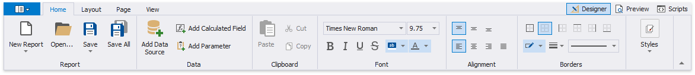
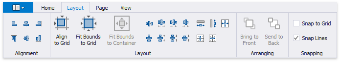
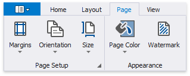
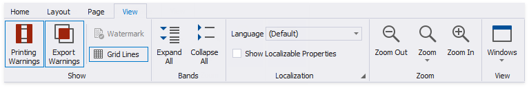

Toolbar
The Report Designer Toolbar includes the Home, Layout, Page, and View tabs for general commands as well as contextual tabs for commands relating to the selected report controls.
Home Tab

Use commands in this tab to
- add new reports, load and save report layouts;
- add data sources, calculated fields, and report parameters;
- delete the selected report elements, place them on the clipboard and paste them onto report bands;
- customize font, color, formatting and alignment settings;
- create new styles based on the selected control's appearance settings and then apply the created styles to other controls.
Layout Tab

This tab provides commands that
- align report elements to each other or the snap grid;
- change the report element size relative to other report elements and to fit the snap grid or the parent container;
- change the stacked elements' order;
- select the snapping mode.
Page Tab

These commands allow you to
- set the page margins, orientation, and paper size;
- specify the page's background color;
- add watermark text to a report or turn a picture into a report's background.
View Tab

This tab enables you to
- turn on/off export and printing warnings to highlight intersecting controls and controls placed outside page margins;
- display the document's watermark on the design surface;
- specify whether to draw the snap grid;
- expand or collapse all report bands;
- change the report language and show localizable properties in the Property Grid;
- zoom the design surface;
- manage the Report Designer panels' visibility.
Contextual Tabs
Contextual tabs are visible whenever you select a specific report element and provide commands applicable to the selected element's type.
The following image demonstrates the table cell's available tabs: